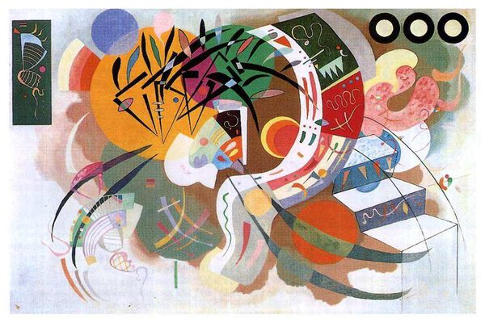

Vasiliy Kandinskiy,1866 - 1944,"Expressionism,Abstractionism",Russian,"Wassily Wassilyevich Kandinsky (Russian: Васи́лий Васи́льевич Канди́нский, tr. Vasíliy Vasílʹevich Kandínskiy) (16 December [O.S. 4 December] 1866 – 13 December 1944) was a Russian painter and art theorist.",http://en.wikipedia.org/wiki/Wassily_Kandinsky,88
